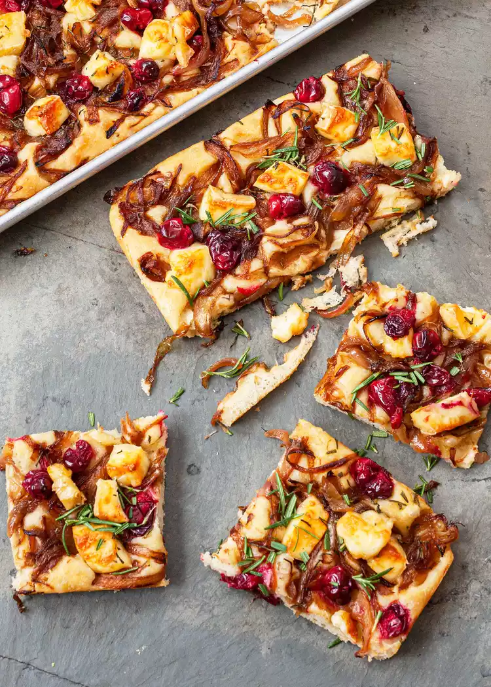

Focaccia whit Caramelized Onion,
Cramberries, and Brie
Wow your best buds this festive focaccia appetizer topped whit sweet caramelized onions, tart cranberries, and creamy brie. It will become your new favorites holiday started!

Image: Sally Vegas
Image: Sally Vegas
FEATURED
Fresch Cranberry Recipes That Go Beyond Sauce
Ingradients
For the focaccina
For the focaccina
Method
-
Make the focaccina dough
In a medium-size mixing blow, or in a stand mixer whit a paddle attachment, mix together all-purpose
the dough ingradients until the flour fully absorbed. You dont'need to actually knead the dought.
I sometimes knead it a few times in the bowl whean mixing by to incorporate.
Read More on Simply Recipes